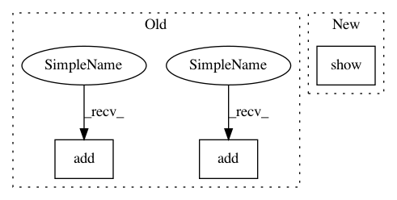

6c524d66dcd30d98a0f0c991252a3be644fa58ef,doc/examples/compute_SNR_in_corpus_callosum.py,,,#,25
Before Change
//tensor_odfs = tenmodel.fit(data_small[roi]).odf(sphere)
fvtk.add(ren, cfa_crop)
fvtk.add(ren, mask_corpus_callosum)
fvtk.show(r)
The mask is not very good, so let"s change the threshold and restart segmenting
After Change
plt.subplot(1, 2, 2)
plt.title("Corpus callosum mask with a threshold of (%.1f, %.1f, %.1f, %.1f, %.1f, %.1f)" % threshold2)
plt.imshow(mask_corpus_callosum_from_cfa[40, ...])
plt.show()
In pattern: SUPERPATTERN
Frequency: 4
Non-data size: 3
Instances
Project Name: nipy/dipy
Commit Name: 6c524d66dcd30d98a0f0c991252a3be644fa58ef
Time: 2013-09-11
Author: stjeansam@gmail.com
File Name: doc/examples/compute_SNR_in_corpus_callosum.py
Class Name:
Method Name:
Project Name: nipy/dipy
Commit Name: c2cfaf314a381e520883eba2d965cd93fd5572e0
Time: 2019-07-21
Author: girard.gabriel@gmail.com
File Name: doc/examples/tracking_bootstrap_peaks.py
Class Name:
Method Name:
Project Name: nipy/dipy
Commit Name: cf7d0bdc4133ea3248e054fa93aa2b5a6f8f2fca
Time: 2013-09-11
Author: stjeansam@gmail.com
File Name: doc/examples/compute_SNR_in_corpus_callosum.py
Class Name:
Method Name:
Project Name: nipy/dipy
Commit Name: aac7b54c8d6957786a9aa70e896cef10fe0ab9fe
Time: 2019-07-21
Author: girard.gabriel@gmail.com
File Name: doc/examples/tracking_pft.py
Class Name:
Method Name:
Project Name: nipy/dipy
Commit Name: 6c524d66dcd30d98a0f0c991252a3be644fa58ef
Time: 2013-09-11
Author: stjeansam@gmail.com
File Name: doc/examples/compute_SNR_in_corpus_callosum.py
Class Name:
Method Name: